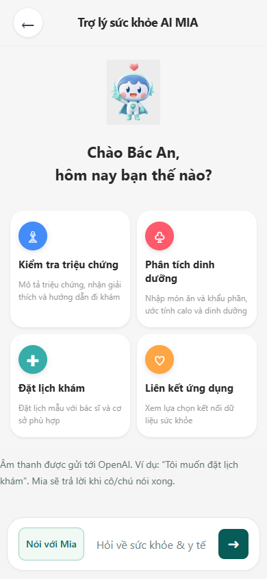
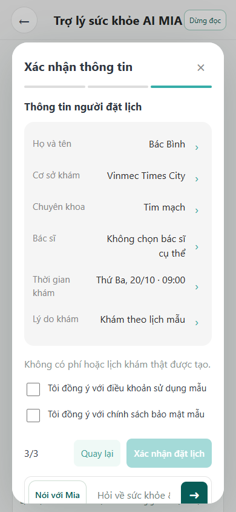

Mia — Exploration Sprint Vinmec
Exploration Sprint · Vinmec · Bài ứng tuyển
Mia: hỗ trợ đặt lịch
bằng hội thoại và giọng đọc
Giúp người trung niên và cao tuổi gặp khó với app kiểm tra, sửa và hoàn tất yêu cầu đặt lịch.
Chu Thị Yến Khanh · K3 · 19/10/2026
Prototype nghiên cứu · Lịch và hồ sơ mô phỏngAI (Codex) hỗ trợ tổng hợp và biên tập deck từ tài liệu repo. Bằng chứng phỏng vấn do người thực hiện cung cấp; không tạo kết quả người dùng.
01 / 10
01 · Khám phá người dùng
Ba trường hợp, hai mức độ quen thiết bị
P1 · 70–85 tuổi
Ít quen thiết bị, gõ chậm, khó phân biệt nút.
Mong đặt lịch đơn giản như gọi điện thoại.
P2 · 70–85 tuổi
Cùng ghi nhận rào cản thao tác và mong muốn cách đăng ký dễ tiếp cận.
Nhận/trả kết quả được đánh giá thuận tiện.
P3 · 50–60 tuổi
Khá quen điện thoại, chưa quen MyVinmec.
Quan sát thấy bỏ sót trường, khó hiểu trạng thái và tìm lựa chọn.
Mẫu khám phá nhỏ, không đại diện toàn bộ người cao tuổi. Mong muốn “như gọi điện” mới là cơ sở thử, chưa chứng minh thích hoặc dùng được voice AI.
01-phong-van/P1.md, P2.md: E08–E10 (18/10/2026); P3.md: E06–E15 (17/10/2026). Có đồng ý tham gia; dùng mã ẩn danh.
02 / 10
02 · Quan sát MyVinmec hiện có
P3 thấy luồng AI dễ làm hơn — cần hiểu đúng số đo
AI có sẵn · chữ và biểu mẫu
≈ 6 phút
Đặt lịch thành công. Hỏi lần lượt, ít mục hơn; cần chỉ vị trí nút AI.
Vướng: vẫn thấy ngày hết lịch và phải chờ tải.
Luồng đặt lịch thông thường
11 phút
Tính từ nút đặt lịch; chưa xác định màn hình kết thúc hoặc gửi thành công.
Vướng: trường bắt buộc, trạng thái, tìm mục; một câu gõ hơn 1 phút.
Mốc đo và điểm dừng chưa tương đương: không kết luận tiết kiệm 5 phút. P3 chưa thử Mia hoặc voiceover bổ sung.
01-phong-van/P3.md: phần 2–3, E06–E15; myvinmec-notes.md. Quan sát ngày 17/10/2026, không phải phép thử A/B.
03 / 10
03 · Journey & điểm hội tụ
Chọn đặt lịch trước để thử khả năng tiếp cận
Đăng ký
Tự đến lấy số.
Chưa đặt trước.
Chờ khám
P1/P2 kể chờ 1–2 giờ hoặc hơn; muốn giảm chờ.
Khám / xét nghiệm
Chưa tách rõ thời gian và điểm đau riêng.
Nhận kết quả
P1/P2 đánh giá thuận tiện: giữ phần đang tốt.
Điểm đau có bằng chứng
Rào cản gõ, tìm chức năng và hiểu mục còn thiếu làm kênh app khó tiếp cận.
Giới hạn tác động
Chưa xác định nguyên nhân hàng đợi. Đặt lịch trước không bảo đảm giảm chờ khám.
02-journey-map/journey-map.md; P1/P2: E01–E10, thời gian theo lời kể; P3: E11–E15. Không tự gán cảm xúc ngoài ghi chép.
04 / 10
04 · Need statement / Biodesign
Đích thiết kế: hoàn tất đúng, kiểm tra và sửa được
Cách để người trung niên và cao tuổi gặp khó khi nhập chữ, tìm lựa chọn và nhận biết thông tin bắt buộc có thể hoàn tất yêu cầu đặt lịch trước, kiểm tra và sửa thông tin với mức hỗ trợ phù hợp.
Problem
Khó nhập, tìm và hiểu điều kiện tiếp tục.
Population
Người gặp rào cản thao tác app; ưu tiên người cao tuổi.
Outcome
Đúng yêu cầu, sửa được, hiểu trạng thái sau gửi.
03-need-statement/need-statement.md; P1/P2: E07–E09; P3: E06–E15. Không mặc định cần tự làm hoàn toàn hoặc phải dùng voice.
05 / 10
05 · Ba thực hành quốc tế
Chuyển nguyên tắc tham khảo thành quyết định thiết kế
Đây là nguyên tắc tham khảo, chưa phải bằng chứng hiệu quả với người dùng Việt Nam hoặc chứng nhận an toàn.
04-best-practice/best-practices.md. Nhấp tên nguồn để mở tài liệu chính thức; repo ghi đã đối chiếu ngày 19/10/2026.
06 / 10
06 · Prototype click được
Demo Mia: yêu cầu → hỏi thiếu → sửa → xác nhận
Kịch bản trình diễn
1. Dùng hồ sơ giả, chọn cơ sở và chuyên khoa theo thẻ tác vụ.
2. Gõ/nói yêu cầu; Mia hỏi phần còn thiếu.
3. Đổi giờ; nghe/đọc lại bản tóm tắt.
4. Xác nhận rõ → xem trạng thái Chờ xác nhận · Mô phỏng.
Chạy: cd 05-prototype
npm.cmd start → localhost:4173


05-prototype/README.md, prompts/README.md; ảnh lưu trong artifacts. Không kết nối đặt lịch Vinmec thật. Demo chỉ tập trung luồng dịch vụ đặt lịch.
07 / 10
07 · Kết quả thử thực tế T1 / T2
Sửa được giờ, nhưng hội thoại còn gây khó dùng
T1 · Không hài lòng
Bác An · Times City · Nội tổng quát
Đổi 08:00 → 09:00; sử dụng giọng đọc.
Làm được: chọn lịch, đổi giờ và kiểm tra lại bản tóm tắt.
Vướng: chờ phản hồi lâu; AI máy móc, giọng khó nghe; khó biết thông tin nào đã chốt.
Đã sửa: hiện rõ thông tin đã xác nhận, gợi ý khi người dùng chưa biết trả lời, đổi giọng đọc.
T2 · “Dùng cũng được”
Bác Bình · Central Park · Nội tổng quát
Ngày thứ hai trong danh sách · 14:00.
Làm được: quay lại luồng đặt lịch, kiểm tra thông tin và trạng thái trước khi quyết định.
Vướng: hỏi lặp, vẫn yêu cầu chọn bác sĩ; màn hình lệch thứ tự hỏi; yêu cầu làm rõ ngày.
Đã sửa: chỉnh prompt để gợi ý và trả lời theo ngữ cảnh linh hoạt hơn.
Ưu tiên sau thử: đồng bộ hội thoại với thông tin trên màn hình, giảm hỏi lặp và kiểm tra lại giọng đọc. Cần thử lại sau sửa.
Nguồn: 05-prototype/user-test-log.md — kết quả kiểm tra thực tế T1/T2. Log định tính; chưa ghi thời gian, số lần trợ giúp hoặc kết quả thử lại sau sửa.
08 / 10
08 · Rủi ro & đạo đức
Người dùng kiểm soát, trạng thái rõ, dữ liệu tối thiểu
| Rủi ro | Kiểm soát cần giữ / kiểm tra |
|---|
| Nghe sai; gửi ngoài ý muốn | Cho sửa transcript và tóm tắt; chỉ gửi sau xác nhận rõ. Sửa thông tin phải xác nhận lại. |
| Hết slot, lỗi công cụ, gửi lặp | Kiểm tra dữ liệu và kết quả; chống lặp; không báo thành công khi lỗi, không nhầm yêu cầu với lịch thật. |
| Lộ dữ liệu hoặc khó dùng voice | Hồ sơ giả; đồng ý riêng trước micro/xử lý âm thanh; có dừng, chữ/bấm; không đưa giọng gốc lên repo. |
| Vượt phạm vi hoặc cần giúp khẩn | Demo chỉ đặt lịch, không tư vấn y khoa. Khi cần trợ giúp khẩn, dừng luồng và hướng liên hệ cơ sở y tế/cấp cứu địa phương. |
Sau hai lần chưa hiểu: đề xuất chữ/bấm hoặc nhờ người hỗ trợ theo ý người dùng. Dừng thử nếu lộ dữ liệu, gửi chưa xác nhận hoặc báo thành công giả.
06-rui-ro-dao-duc/risk-assessment.md. Biện pháp thiết kế cần tiếp tục đối chiếu; chưa có tích hợp hỗ trợ hay cấp cứu thật.
09 / 10
09 · Coach K4 & bước tiếp theo
Dẫn nhóm bằng bằng chứng và các mốc rõ ràng
Nhịp coach 5–10 bạn K4
Nhóm khoảng 2 người; mỗi việc có người làm, người rà và hạn.
Thứ Hai: VRIC · Thứ Tư: Vinmec.
Thứ Sáu: checkpoint và báo cáo.
T0: NDA/đào tạo → T1: khám phá → T2: Cổng 1 → T3: prototype → T4: thử vòng 1 → T5: vòng 2/Cổng 2 → T6: Demo Day.
Việc tiếp theo sau T1 / T2
1. Thử lại bản đã sửa: thông tin đã chốt, hỏi lặp, thứ tự màn hình và giọng đọc.
2. Ghi thời gian, số lần cần giúp và khả năng sửa, hiểu trạng thái.
3. So sánh bật/tắt giọng đọc trên tác vụ tương đương để đánh giá lợi ích.
Log hiện tại cho thấy điểm vướng; chưa có kết quả đo sau sửa hoặc so sánh bật/tắt.
Khi nhóm kẹt: quay lại một sự kiện cụ thể, đối chiếu nguồn, chọn phép thử nhỏ. Trước checkpoint: kiểm tra đồng ý/ẩn danh, pain có bằng chứng, need không chứa giải pháp, log có quan sát và sửa đổi.
07-coach-plan/coach-plan.md; 05-prototype/user-test-log.md; đề gốc mục 4 và 6.3. Mỗi vòng sprint: 3–5 người dùng Vinmec; bài ứng tuyển: 2–3 người. AI hỗ trợ biên tập nội dung.
10 / 10